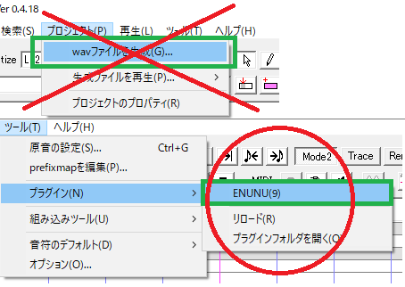
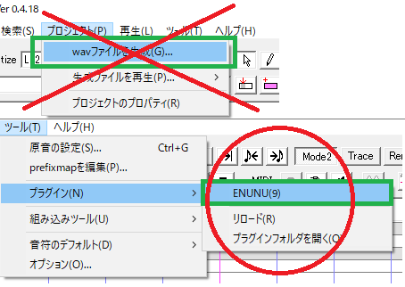
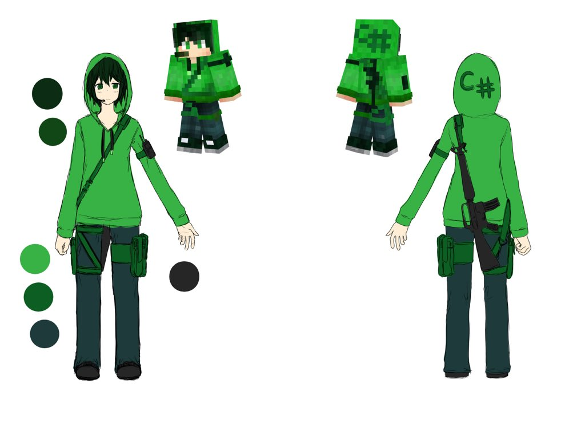

始めに
ご来訪ありがとうございます。
ここはHaruqaのUTAU音源、NNSVS/ENUNUモデル、TALQuモデル、VRM、SSYQu専用音源、MMDモデル、キャラクター立ち絵の配布サイトです。キャラクター設定と利用規約が確認できます。
ページ切り替えにjavascriptを使用しています。有効にしていない場合は有効にしてください。
ここはHaruqaのUTAU音源、NNSVS/ENUNUモデル、TALQuモデル、VRM、SSYQu専用音源、MMDモデル、キャラクター立ち絵の配布サイトです。キャラクター設定と利用規約が確認できます。
ページ切り替えにjavascriptを使用しています。有効にしていない場合は有効にしてください。
動作確認環境
FireFox
Google Chrome
公式立ち絵 ←旧 新→


各種リンク
更新履歴
2022/05/02 有志製作立ち絵のリンクを追加
2021/10/23 ニコニ・コモンズ親作品登録のお願いを追加
2021/08/22 有志製作立ち絵のリンクを追加
2021/06/10 利用規約を更新
2021/04/11 利用規約を更新
2021/02/23 TALQu、SSYQu、VRMのページ追加、VRMと機械学習モデルについての利用規約加筆
2020/12/17 ENUNUのNNSVSモデルMDNバージョンを追加
2020/12/15 ENUNU対応のNNSVSモデルについて説明書きを追加
2020/12/13 ENUNU対応のNNSVSモデルを追加
2020/11/08 NNSVSモデルを追加、整理
2020/10/25 NNSVSモデルを追加
2020/10/24 NNSVSモデルを追加、利用規約を更新、立ち絵のダウンロードを追加
2020/08/01 利用規約を更新
2020/02/23 無生物音源公開
2019/11/04 MMDモデルバージョンアップ
2019/07/23 MMDモデルバージョンアップ
2019/07/15 配布サイト公開開始
2021/10/23 ニコニ・コモンズ親作品登録のお願いを追加
2021/08/22 有志製作立ち絵のリンクを追加
2021/06/10 利用規約を更新
2021/04/11 利用規約を更新
2021/02/23 TALQu、SSYQu、VRMのページ追加、VRMと機械学習モデルについての利用規約加筆
2020/12/17 ENUNUのNNSVSモデルMDNバージョンを追加
2020/12/15 ENUNU対応のNNSVSモデルについて説明書きを追加
2020/12/13 ENUNU対応のNNSVSモデルを追加
2020/11/08 NNSVSモデルを追加、整理
2020/10/25 NNSVSモデルを追加
2020/10/24 NNSVSモデルを追加、利用規約を更新、立ち絵のダウンロードを追加
2020/08/01 利用規約を更新
2020/02/23 無生物音源公開
2019/11/04 MMDモデルバージョンアップ
2019/07/23 MMDモデルバージョンアップ
2019/07/15 配布サイト公開開始
UTAU音源ダウンロード
連続音音源
HaruqaVCV - Ver.2.0HaruqaVCV - Ver.2.0venom
HaruqaVCV - Ver.1.1
HaruqaVCV - Ver.1.0
無生物連続音音源
Haruqa(無生物)_20200223HANASU用VCVC音源
HaruqaVCVC - Ver.2.1softHaruqaVCVC - Ver.2.1edge
協力
公式立ち絵：ひな太(@UPC6789) さまVCV1.0動画：秋月トウカ(@akitsuki0126) さま
VCV2.0音源テスト協力：bizz(@bizz_v) さま、炭酸水(@tansansuisui) さま
無生物音源クローズドベータ参加：CrazY(@crazy_toho) さま
連続音音源配布動画
Ver.2.0
Ver.2.0venom
Ver.1.1
Ver.1.0
無生物連続音音源配布動画
20200223
HANASU用VCVC音源配布動画
Ver.2.0soft
Ver.2.0edge
連続音音源簡易紹介
Ver.2.0の収録音階
C5 ：歌声
サフィックス：C5
A4 ：歌声
サフィックス：A4
G4 ：張り上げ発声
サフィックス：G4
F4 ：張り上げ発声、硬め
サフィックス：F4
D4 ：歌声
サフィックス：D4
B3 ：エッジ
サフィックス：（無）
G3 ：低音エッジ
サフィックス：G3
F3 ：歌声
サフィックス：F3
ext：仮声帯(デスボ)
サフィックス：ext
サフィックス：C5
A4 ：歌声
サフィックス：A4
G4 ：張り上げ発声
サフィックス：G4
F4 ：張り上げ発声、硬め
サフィックス：F4
D4 ：歌声
サフィックス：D4
B3 ：エッジ
サフィックス：（無）
G3 ：低音エッジ
サフィックス：G3
F3 ：歌声
サフィックス：F3
ext：仮声帯(デスボ)
サフィックス：ext
Ver.2.0venomの収録音階
G3 ：低音エッジ
サフィックス：G3
F3 ：歌声
サフィックス：F3
ext：仮声帯(デスボ)
サフィックス：（無）(v2.0:ext)
サフィックス：G3
F3 ：歌声
サフィックス：F3
ext：仮声帯(デスボ)
サフィックス：（無）(v2.0:ext)
Ver1.1の収録音階
C5 ：搾り出し発声 (v1.1)
サフィックス：C5
A4 ：歌声 (v1.1)
サフィックス：A4
G4 ：張り上げ発声 (v1.0 旧:↑↑)
サフィックス：G4
E4 ：歌声、ビブラート含み (v1.0 旧:↑)
サフィックス：E4
C#4：地声と歌声の中間 (v1.1)
サフィックス：C#4
C4 ：地声と歌声の中間 (v1.0)
サフィックス：（無）
A3 ：地声 (v1.1)
サフィックス：A3
G3 ：低音エッジ (v1.0 旧:↓)
サフィックス：G3
サフィックス：C5
A4 ：歌声 (v1.1)
サフィックス：A4
G4 ：張り上げ発声 (v1.0 旧:↑↑)
サフィックス：G4
E4 ：歌声、ビブラート含み (v1.0 旧:↑)
サフィックス：E4
C#4：地声と歌声の中間 (v1.1)
サフィックス：C#4
C4 ：地声と歌声の中間 (v1.0)
サフィックス：（無）
A3 ：地声 (v1.1)
サフィックス：A3
G3 ：低音エッジ (v1.0 旧:↓)
サフィックス：G3
Ver1.0の収録音階
G4：張り上げ発声
サフィックス：↑↑
E4：歌声、ビブラート含み
サフィックス：↑
C4：地声と歌声の中間
サフィックス：（無）
G3：低音エッジ
サフィックス：↓
サフィックス：↑↑
E4：歌声、ビブラート含み
サフィックス：↑
C4：地声と歌声の中間
サフィックス：（無）
G3：低音エッジ
サフィックス：↓
HANASU用VCVC音源簡易紹介
音源情報VCVC2.1soft

音源情報VCVC2.1edge

NNSVSモデルダウンロード
ENUNU対応
ENUNUの使い方：UTAUでNNSVSモデルを使おう！（ENUNU）補足：ダウンロードしたzipをUTAUへドラッグ＆ドロップしてください。もしくは、ダウンロードしたzipを解凍し、UTAU音源のごとくUTAUのvoiceフォルダに入れてください。
ustを保存し、再生範囲を選択し、ENUNUを起動すると、保存したustと同じ場所にwavが出力されます。
※ENUNUの使い方についてご注意※
2020/12/15現在、ENUNUはUTAUのwavファイルを生成ではなく、
UTAUプラグイン実行によりNNSVSモデルからのwav出力を行います。
UTAU上での通常の再生や、UTAUのwav出力で得られる音声は、
ustの確認のためのUTAU単独音音源の音声です。 
2020/12/15現在、ENUNUはUTAUのwavファイルを生成ではなく、
UTAUプラグイン実行によりNNSVSモデルからのwav出力を行います。
UTAU上での通常の再生や、UTAUのwav出力で得られる音声は、
ustの確認のためのUTAU単独音音源の音声です。 
バージョン付き名称表記：ENUNU_Haruqa_AutomaticGeneratePitchFix_NNSVSmodel_20201108_CONV_MDN
略式表記：ENUNU_Haruqa_AutoGenPitchFix_20201108_CONV_MDN
使用データセット：Haruqa_DatasetForNNSVS_FaithfulRec_202010
wav処理：詳細ノイズ除去、音圧調整、収録ミス分除外、自動ピッチ修正、解析エラー分除外
使用したwavの長さ：1時間17分
モデル構造：
acoustic:nnsvs.model.Conv1dResnetMDN
duration:nnsvs.model.MDN
timelag:nnsvs.model.MDN
学習回数：250epoch
D4Cのスレッショルドを0に変更しましたが、有声/無声誤判定ノイズらしきものはは5%くらい発生します。
略式表記：ENUNU_Haruqa_AutoGenPitchFix_20201108_CONV_MDN
使用データセット：Haruqa_DatasetForNNSVS_FaithfulRec_202010
wav処理：詳細ノイズ除去、音圧調整、収録ミス分除外、自動ピッチ修正、解析エラー分除外
使用したwavの長さ：1時間17分
モデル構造：
acoustic:nnsvs.model.Conv1dResnetMDN
duration:nnsvs.model.MDN
timelag:nnsvs.model.MDN
学習回数：250epoch
D4Cのスレッショルドを0に変更しましたが、有声/無声誤判定ノイズらしきものはは5%くらい発生します。
Haruqa_AutoGenPitchFix_20201108からENUNU対応をしました。
WSLのNNSVS対応
バージョン付き名称表記：Haruqa_AutomaticGeneratePitchFix_NNSVSmodel_20201108
略式表記：Haruqa_AutoGenPitchFix_20201108
使用データセット：Haruqa_DatasetForNNSVS_FaithfulRec_202010
wav処理：詳細ノイズ除去、音圧調整、収録ミス分除外、自動ピッチ修正、解析エラー分除外
使用したwavの長さ：1時間17分
モデル構造：
acoustic:nnsvs.model.Conv1dResnet
duration:nnsvs.model.LSTMRNN
timelag:nnsvs.model.FeedForwardNet
学習回数：200epoch
使用サンプル：こちら
色々手を尽くしたけど、30分くらいwavを除外するしかなかったよ…という感じ。
自動ピッチ修正かけると元のピッチの表現力消えるじゃーんと思って、ピッチ修正なしのものも作ろうとしたけど、ノイズがどうにもならなかった…。
略式表記：Haruqa_AutoGenPitchFix_20201108
使用データセット：Haruqa_DatasetForNNSVS_FaithfulRec_202010
wav処理：詳細ノイズ除去、音圧調整、収録ミス分除外、自動ピッチ修正、解析エラー分除外
使用したwavの長さ：1時間17分
モデル構造：
acoustic:nnsvs.model.Conv1dResnet
duration:nnsvs.model.LSTMRNN
timelag:nnsvs.model.FeedForwardNet
学習回数：200epoch
使用サンプル：こちら
色々手を尽くしたけど、30分くらいwavを除外するしかなかったよ…という感じ。
自動ピッチ修正かけると元のピッチの表現力消えるじゃーんと思って、ピッチ修正なしのものも作ろうとしたけど、ノイズがどうにもならなかった…。
バージョン付き名称表記：Haruqa_AutomaticGenerate_NNSVSmodel_20200923
略式表記：Haruqa_AutoGen_20200923
使用データセット：Haruqa_DatasetForNNSVS_FreestyleRec_202009
wav処理：定常ノイズ除去
モデル構造：
acoustic:nnsvs.model.Conv1dResnet
duration:nnsvs.model.LSTMRNN
timelag:nnsvs.model.FeedForwardNet
学習回数：50epoch
使用サンプル：こちら
とりあえず音がでるねぇ…という感じのテストモデルというところ。
データセットからどのくらいwavを使ったのか、データ消しちゃったので不明…。
略式表記：Haruqa_AutoGen_20200923
使用データセット：Haruqa_DatasetForNNSVS_FreestyleRec_202009
wav処理：定常ノイズ除去
モデル構造：
acoustic:nnsvs.model.Conv1dResnet
duration:nnsvs.model.LSTMRNN
timelag:nnsvs.model.FeedForwardNet
学習回数：50epoch
使用サンプル：こちら
とりあえず音がでるねぇ…という感じのテストモデルというところ。
データセットからどのくらいwavを使ったのか、データ消しちゃったので不明…。
協力
環境構築協力：CrazY(@crazy_toho) さま
収録手法
自由収録(FreestyleRec)
概要：音程やリズムを楽譜にとらわれず自由に発声したものを収録し、自動採譜。
忠実収録(FaithfulRec)
概要：音程やリズムを楽譜に合わせて収録。
省エネNNSVSモデル制作講座にて随時情報公開中なのでぜひ(隙あらば宣伝)
省エネNNSVSモデル制作講座にて随時情報公開中なのでぜひ(隙あらば宣伝)
UTAU収録(UTAURec)
UTAU音源の収録方法で収録したもの、作成したモデルは非公開
サンプルはこちら
サンプルはこちら
データセット説明
Haruqa_DatasetForNNSVS_FreestyleRec_202009
収録手法：自由収録
収録日：2020/09
収録状況：エアコンとデスクトップPCの排気音でうるさい
単純なwavの長さ：38分
音素ラベリング：自動
備考：テスト収録のようなものですね。
未公開
収録日：2020/09
収録状況：エアコンとデスクトップPCの排気音でうるさい
単純なwavの長さ：38分
音素ラベリング：自動
備考：テスト収録のようなものですね。
未公開
Haruqa_DatasetForNNSVS_FaithfulRec_202010
収録手法：忠実収録
収録日：2020/10
収録状況：エアコンは切ってノートPCで収録したので、ノイズは少な目
単純なwavの長さ：1時間46分
音素ラベリング：自動
未公開
収録日：2020/10
収録状況：エアコンは切ってノートPCで収録したので、ノイズは少な目
単純なwavの長さ：1時間46分
音素ラベリング：自動
未公開
wav処理説明
ノイズ除去
iZotope RX 7 Elementsにてノイズ除去
音圧調整
iZotope RX 7 Elementsにて手コンプ、全体にソフトリミッターなど
収録ミス分除外
噛んでる、除去出来ないノイズ、機材の不具合等で音質が著しく悪い等を除外
自動ピッチ修正
楽譜に沿って、ピッチを機械的に修正
解析エラー分除外
worldの有声/無声の判定ミス(?)により、ノイズ化するであろう部分を除外
著しい音素ラベリングのズレもここで引っかかる(…と思われ)なので、ズレ軽減も期待…
著しい音素ラベリングのズレもここで引っかかる(…と思われ)なので、ズレ軽減も期待…
TALQuモデルダウンロード
TALQu本体とデフォルトモデル
Boothにて配布していますTALQu 深層学習系読み上げソフト フリー/ドネーションウェア
実験中モデル
FANBOXにて支援者限定だったり、無料記事だったりで配布していますSSYQu専用音源ダウンロード
VRMダウンロード
VRM
Haruqa_緑パーカー - Ver.1.2.0Haruqa_マイクラのすがた - Ver1.1.0
Haruqa_迷彩ワンピース - Ver.20200703
VRoidHubでのプレビュー
※VRoidHubはライセンス情報が書き換えられてしまうのでダウンロード不可＆Haruqa以外の声あて不可の簡単のため口のブレンドシェイプを抜いていますHaruqa_緑パーカー
Haruqa_マイクラのすがた
MMDモデルダウンロード
VRoidから変換調整モデル
Haruqa(VRM) - Ver.1.1.0_pmx1.2Haruqa(VRM) - Ver.1.1.0から変換したものです。
ray-mmdに調整していただいたものが同梱されています。
2019/11/04 調整しました。
協力
MMDモデル調整協力：CrazY(@crazy_toho) さまMMDモデル材質順指摘：ふわふわ中毒(@yukkuri_mikan) さま
表示サンプル
バニラMMD

ray-mmd

立ち絵ダウンロード
公式立ち絵とマイクラスキン
Haruqa_立ち絵_20201024協力
公式立ち絵：ひな太(@UPC6789) さまキャラクターデザイン設定

有志製作立ち絵
製作者様ご製作ありがとうございます。各有志製作者により、Haruqaの利用規約にさらに追加の制約がかかっている可能性があります。
利用の前にそれぞれの利用規約やReadMeなど、よくご確認ください
デザイン元：緑パーカー

ダウンロードはこちらを経由してください
製作：悪霊ティラ(@s_zerer)さま
ファイル形式：psd、png
補足：様々なキャラクターと同時に配布されているドット絵立ち絵で、共有される差分パーツで様々な表情変更が行えるとのこと
Haruqaのファイル位置：01_キャラクター\03_TALQu・UTAU\haruqa.png
※注意：ここに表示しているファイルは、サイト読み込み負荷軽減のため縮小されています。ご利用の際は必ず、上記リンクからダウンロードリンクをたどってください。
ダウンロードはこちらを経由してくださいharuqaさんのPSDToolKit配布します。https://t.co/84a4Eh5eKR
— 結野アキラ (@yuino_akira) July 24, 2021
マーク：7種類
眉：5種類
目：11種類
口：あいうえお＋ん＋9種類
↓使用例 pic.twitter.com/nWEFZm4NlJ
製作：結野アキラ(@yuino_akira)さま
ファイル形式：psd
対応：PSDToolKit
デザイン元：迷彩ワンピース
キャラクター詳細
キャラクターの詳細設定です。創作していただく上でヒントになれば幸いです。厳守する必要はありません。まれに変更されます。
性別
中性
声別
中声
年齢
不明
身長
基本162cm
使用している音源に合わせて可変
体重
基本52kg
使用している音源に合わせて可変
髪
黒～深緑
瞳
緑系
利き手
右手
利き足
右足
利き目
右目
服装
C#スキン
緑のパーカー、黒/紺/深緑っぽいズボン
持ち物
AR
ほか装備品
ナイフ
替えの弾倉
通信機
win10のタブレット
性格
真面目、ヤンデレ（稀によくある）
使用している音源に合わせて可変
一人称
私（わたし）
使用している音源や状況に合わせて可変
二人称
名前＋さん、知らない場合は、あなた
愛称がある場合は愛称呼び
口調
基本ですます調（丁寧語）もしくは、だである調
相手、使用している音源によって可変
口癖
盛大に、言及する、だが大丈夫だ
好きなもの
ゲーム実況、テイ様、ゲーム、プログラミング、動画作成、ストレイドさん
好きなゲーム
COD、FPS、TPS
嫌いなもの
運ゲー
なりたいもの
AI
なりたかったもの
SE
主食
動画についたコメント、ストレイドさん
利用規約
はじめに
Haruqa利用規約のご確認ありがとうございます。
以下の共通利用規約、音源利用規約、キャラクター利用規約、3Dモデル利用規約、機械学習音声モデルや機械学習用音声（データセット）に関連する規約、n次創作利用規約、それぞれ対応する利用規約に同意の上ご利用下さいませ。
利用規約は予告なく改訂される可能性があります。あらかじめご了承くださいませ。
Haruqaを使用した場合、Haruqa利用規約に同意したものとみなします。
ニコニ・コモンズ親作品登録のお願い
Haruqaの音声またはキャラについて利用する場合の親登録用
を2021年09月11日に作成しました。
登録は強制ではなく、また、ニコニ・コモンズ対応のサイトへのみ利用を制限するものではありません。
意図としては、音声もしくはキャラクターの利用が許可されていることが明確に表示できるようになること、利用作品が一覧で確認できること（Haruqa名が開発者名で使われることが増えてきたので…）です。
また、この親作品登録がHaruqaポイントの発行条件となっているので、その方向をお考えの際はご注意くださいませ…。
を2021年09月11日に作成しました。
登録は強制ではなく、また、ニコニ・コモンズ対応のサイトへのみ利用を制限するものではありません。
意図としては、音声もしくはキャラクターの利用が許可されていることが明確に表示できるようになること、利用作品が一覧で確認できること（Haruqa名が開発者名で使われることが増えてきたので…）です。
また、この親作品登録がHaruqaポイントの発行条件となっているので、その方向をお考えの際はご注意くださいませ…。
名称表記定義
Haruqa
キャラクター名, 音源名, 機械学習音声モデル名, 音源提供者名, 管理者名
Haruqa(UTAU)
音源提供者ではなくUTAU音源/キャラクターとして明記するときに用いる表記
Haruqa(なま)
音源提供者の生声を明記するときに用いる表記
Haruqa(VRM)
Haruqa作成のHaruqaのVRMを明記するときに用いる表記
Haruqa(SSYQu)
HaruqaのSSYQu音源を明記する時に用いる表記
Haruqa(AI)
音源提供者ではなく機械学習音声モデル/キャラクターとして明記するときに用いる表記
ニコニコ動画でのタグとしての意味
Haruqa
2020/08/01以前：投稿者名タグ。HaruqaはHaruqaが投稿していることを示す意図で使用しています
2020/08/01定義拡大：作業者名タグ。Haruqa自身による動画投稿もしくはHaruqaが何らかのかかわりを持った(音源を使用した/キャラクターを使用した/ソフトウェアを使用した/動画作成を手伝った/音声作成を手伝った等)動画に使用することとします。このタグを付加することは義務ではありません
Haruqa(UTAU)
音源名タグ。UTAU音源HaruqaのHaruqaを使用していることを示します。音源の推奨タグです
Haruqa(なま)
Haruqaの音源提供者の生声タグ。音源提供者の生声を使用していることを示します
Haruqa(はんなま)
UTAU音源Haruqaと音源提供者のユニット名タグ。カバーや実況等で共演した際つけられます
Haruqa(VRM)
2020/08/01廃止しました。Haruqaの音声無しに3Dモデルを使用し、タグを付けたい場合Haruqaタグが最適です
Haruqa(SSYQu)
2020/08/01追加：音源名タグ。SSYQu音源Haruqaを使用していることを示します
Haruqa(AI)
2020/10/24追加：機械学習音声モデル名タグ。機械学習音声モデルのHaruqaを使用していることを示します
必要な利用規約パターンリスト
（下記省略していますが共通利用規約は全てのパターンで必要です）
本音源/機械学習音声モデルを使用した歌唱
音源利用規約
本音源/機械学習音声モデルを使用しているが別キャラクター/創作者の声代わり等、本キャラクター以外として喋らせている場合
音源利用規約
本音源/機械学習音声モデルを使用し本キャラクターが歌唱/喋っているかのような表現
（ビジュアルを使用しているか、していないかを問わない）
音源利用規約, キャラクター利用規約
本キャラクターのイラスト等ビジュアル表現
キャラクター利用規約
本3Dモデルを用いた静画/動画
キャラクター利用規約, 3Dモデル利用規約
本音源/機械学習音声モデルを使用した音声と本3Dモデルを使用した静画/動画を合わせる場合
音声利用規約, キャラクター利用規約, 3Dモデル利用規約
Haruqaがニコニコ動画に投稿した本音源/機械学習音声モデルをメインに用いた動画から音声を抜いて
本キャラクターのイラスト等で動画を作る場合
音源利用規約, キャラクター利用規約, n次創作利用規約
Haruqaがニコニコ動画に投稿した本音源/機械学習音声モデルをメインに用いた動画から音声を抜いて
本3Dモデルを用いて動画を作る場合
音源利用規約, キャラクター利用規約, 3Dモデル利用規約, n次創作利用規約
Haruqaがニコニコ動画に投稿した本音源/機械学習音声モデルをメインに用いた動画から音声を抜いて
Haruqaと関係無い動画を作る場合
音源利用規約, n次創作利用規約
ほか、上記パターンに当てはまらない場合、どれが当てはまるか不明な場合は管理者までご確認下さい
共通利用規約
禁止事項
・法令に違反する行為
・本音源や管理者、第三者など対象を問わずに、誹謗中傷や名誉毀損、またはそれを助長、その他不快感を与える行為
・宗教活動に利用する行為
・政治活動に利用する行為
・第三者への配慮（警告等）なく性的表現、グロテスク表現、暴力表現を創作物に含める行為
・他、管理者が不適当と判断する行為
管理者の事前の許可が必要な事項
・改変の有無を問わず、配布物自体を再配布/販売する行為
許可事項
・創作物をインターネット上に公開する行為（第三者の著作権などの権利を侵害する行為は許可されない）
・本来は宗教的行事であるが、日本において一般的に浸透している行事に利用、それらの表現を含める行為
・フィクションであり、フィクションであることを明記したうえでの、常識の範疇を逸脱しない宗教的表現、政治的表現を含める行為
・改変し本音源/キャラクターとして作品に利用する行為、ただし、改変していることを明記する事
・個人活動、同人活動範囲での商用利用（YouTubeでの収益化、ニコニコ動画でのクリエイター奨励プログラム登録等を含みます）
・本音源/キャラクターを利用し、さらにその二次利用を想定する素材（立ち絵や音声素材を想定）を配布する行為、ただしその素材についてもこの利用規約が適用されます。配布する際はこの利用規約が適用されることを明記してください。また、その配布者はこの利用規約と矛盾しないさらなる制約を課すことが出来ます。公式配布以外の素材を利用する際は、配布者が課す制約にも注意してください
音源利用規約
許可事項
・本音源/機械学習音声モデルを想定されたソフトウェア以外で利用する行為（管理者はその動作を保証しません）
・原音設定、周波数表などこの音源のために調整した設定ファイルを配布する行為
（管理者はその動作を保証しません。管理者以外から配布されたものを再配布する許可もこの規約に帰属し、永続的に許可されるものとします）
・本音源/機械学習音声モデルを利用して話している/喋っているかのような表現をする行為（UTAUで俗に言うHANASU）
・本音源/機械学習音声モデルを別のキャラクターの声/創作者の声代わりとして利用する行為。ただし管理者による事前の許可がない場合、本音源/機械学習音声モデルの利用していることを明記する事
・本音源/機械学習音声モデルに音源提供者の生声を混ぜて合成する行為（俗に言う人力ボカロ）。ただし管理者による事前の許可がない場合、生声を混ぜていることを明記する事
キャラクター利用規約
補足事項
・本音源/機械学習音声モデルを別のキャラクターの声として利用している場合や、楽曲への音源利用のみの場合はこの利用規約の適用外です
禁止事項
・性的表現もしくはそれらを仄めかす表現をする行為
（本キャラクターを利用した創作物にそれら表現が含まれるが、本キャラクターが当事者でない場合はこの禁止事項の適応外です）
・本音源/機械学習音声モデルもしくは音源提供者以外の音声を当てて歌唱/喋っているような表現をする行為
許可事項
・第三者への配慮（警告等）をしたうえで、本キャラクターを利用した創作物にグロテスク表現、暴力表現を含める行為
・本キャラクターが同時に複数存在するような表現、それらに差異（性格、見た目）があるように見せる行為
・本キャラクターの服装、装備品、髪の長さなど通常変化しても違和感のない部分のデザインを変更し表現する行為（いわゆる着せ替え）
・本キャラクターの服装、装備品以外の本来変わらない生体部分（髪や瞳の色など）を一時的な効果として、もしくは、2Pカラーのような世界観の下に設定範囲外へ変更し表現する行為
3Dモデル利用規約
補足事項
・本3Dモデルを利用するにあたり上記キャラクター利用規約が同時に適用されます
・PMDE/PMXEの縛りにより、PMDE/PMXEで調整されたPMXを使用した作品を商用利用することは禁止されています。Haruqaが配布するPMXはPMDE/PMXEにて調整されています
共通禁止事項
・本3Dモデルからメッシュ/テクスチャ等を切り出し、別のキャラクターモデルへ流用する行為
PMX禁止事項
・別のファイル形式へ変換する行為
・VRChat等オンラインサービスへアップロードし利用する行為
PMX許可事項
・PMDE/PMXE等で調整する行為、ただし調整したことを明記すること
VRM許可事項
・他者が利用できない範囲でのオンラインサービスアップロード（VRoidHubへの非公開アップロード、VRChatへの非Publicアップロードなど）
※ただし、繰り返しとなりますがHaruqa以外の声あてNGであることをご留意ください、TALQuやSSYQu、UTAU音源による喋り声を当てることが可能です
・Blender、Unity等で調整する行為、ただし調整したことを明記すること
機械学習音声モデルや機械学習用音声（データセット）に関連する規約
補足事項
・機械学習音声モデルから出力した音声については「音源利用規約」に準じて下さい
・機械学習用音声を機械学習などを通さずそのまま利用する場合、もしくはUTAUや波形編集ソフト等で加工して利用する場合については「音源利用規約」に準じて下さい
・作成に使用したコーパステキストから継承される規約も合わせてご確認ください
・転移学習やファインチューニング元として使用し、Haruqaの声質を再現することがなくなった機械学習モデルの出力音声は、Haruqaの声ではないと定義します。言い換えるとキャラクターのHaruqaに声あてを行うことが出来ません
管理者の事前の許可が必要な事項
・機械学習用音声を機械学習用に前処理加工を行ったファイル群を配布する行為
・機械学習音声モデルや機械学習用音声から生成した機械学習音声モデルを転移学習やファインチューニング元として使用・配布する行為。使用した旨の表記に関して事前の許可が無い場合必須とし、継承されるものとします
【Haruqaの声質が再現されない場合】
・管理者の事前の許可があり転移学習やファインチューニング元として使用した場合で、特殊事由があり使用した旨を表記せず使用・配布する行為、この場合Haruqa側から制約を課しません
・機械学習用音声を使用した機械学習モデルを配布する行為
【Haruqaの声質が再現される場合】
・機械学習用音声を使用した機械学習モデルを配布する行為、ただしこの利用規約が継承されます
許可事項
・機械学習用音声を自動的にダウンロードするツールを公開する行為、ただしこの利用規約が確認できるよう案内する工夫努力をすること
・機械学習用音声を使用した機械学習モデルの出力音声や動作デモ（音声認識想定）を公開する行為、ただし使用した旨を表記すること
・機械学習用音声を機械学習用に前処理加工をする手順を公開する行為
n次創作利用規約
前提事項
・n次創作利用許可の対象はHaruqaが作成しHaruqaがニコニコ動画に投稿したHaruqaメイン（本音源/機械学習音声モデルから合成した音声、音源提供者の生声のどちらかを問わない）の動画の音声に限る
・Haruqaの投稿物が一次創作物でない場合、一次創作元の利用規約等も確認しそれに従うこと
・n次創作物の投稿先はニコニコ動画に限る（身内間でのテスト投稿等でyoutubeの限定公開を利用する等公開先が制限される場合はそれを許可する）
・n次創作物の元となった動画とその動画のコンテンツツリーの親作品全てを、投稿した動画の親作品として登録すること（ただし、検索除けが一般的とされる界隈での創作物ではこの限りではなく、動画の中で動画IDを記載する事で免除とする）
・Haruqaの作成したものから創作された第三者の創作物、つまりn+1次創作物の利用はこの利用規約のみならずn+1次創作者の許諾を必要とする
禁止事項
・Haruqaがニコニコ動画以外のインターネット上の投稿サイトへ投稿した創作物からn次創作する行為
・Haruqa以外をメインに使用した動画から音声を抜いてn次創作する行為。ただし、Haruqaの音声のみを切り出す場合は許可される
許可事項
・本キャラクターのイラストや本3Dモデルで音声に動画をつける行為
・Haruqaとは関係のない動画を作成し音声を利用する行為
免責事項
Haruqaを利用したことで被ったいかなる損害も管理者は一切責任を負いません。
自己責任で利用をお願いいたします。
更新履歴
2017/02/23 HaruqaVCV - Ver.1.0 (利用規約第1版同梱) 配布開始
2017/05/23 HaruqaVCV - Ver.1.1 (利用規約第2版同梱) 配布開始
2019/07/15 配布サイト作成と同時に大幅に改定
2020/08/01 ニコニコ動画でのタグ定義を調整、SSYQuについて追加
2020/10/24 機械学習音声モデルについて追記、商用利用について変更
2021/02/23 VRMについて追記
2021/04/11 機械学習音声モデルや機械学習用音声(データセット)に関連する規約について表現を変更
2021/06/10 キャラクター利用規約のカップリング表現に関しての制限を解除、キャラクターデザイン変更に関する許可事項を明記。3Dモデルの調整に関して調整したことを明記するよう変更
管理者：Haruqa(https://twitter.com/niconicoHaruqa)